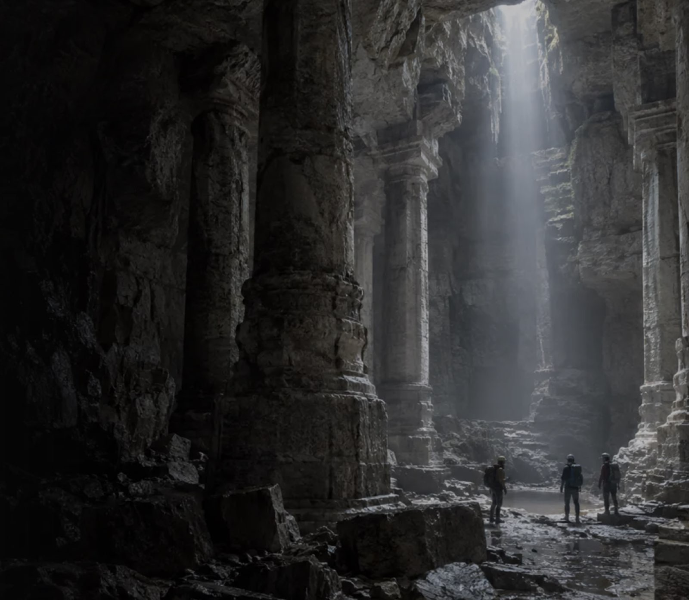
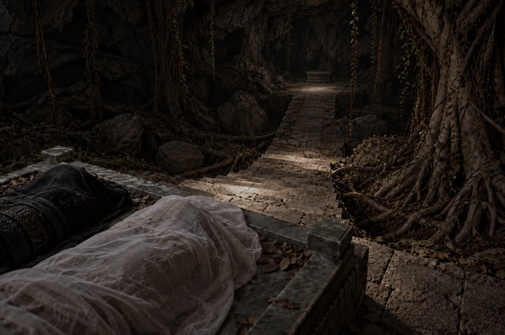
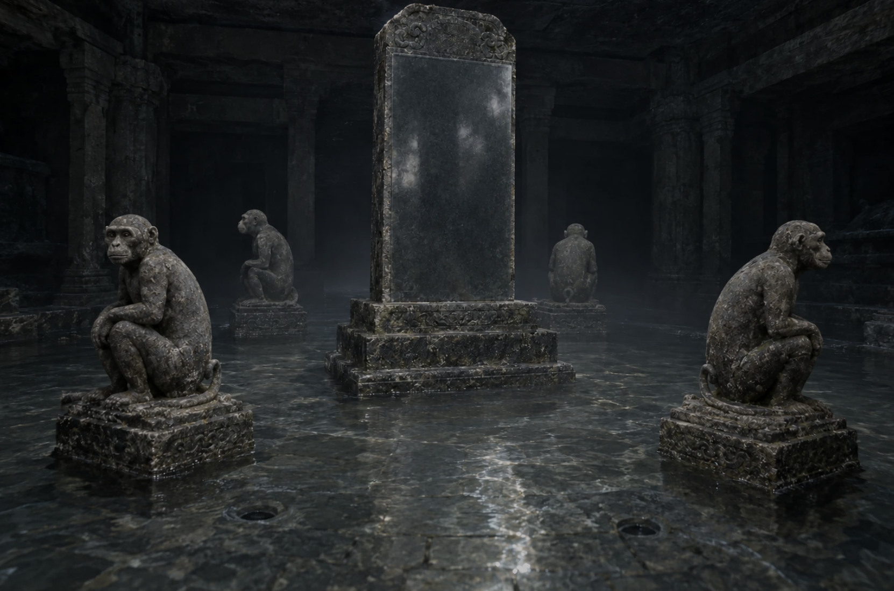
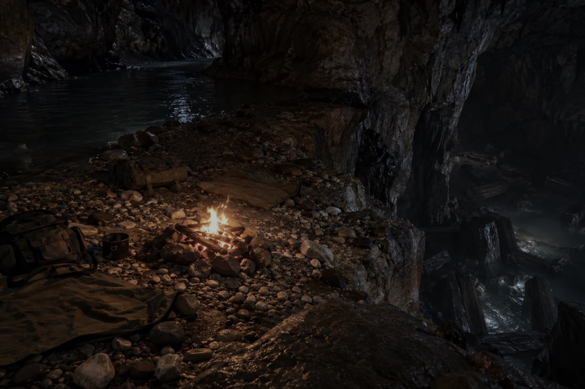
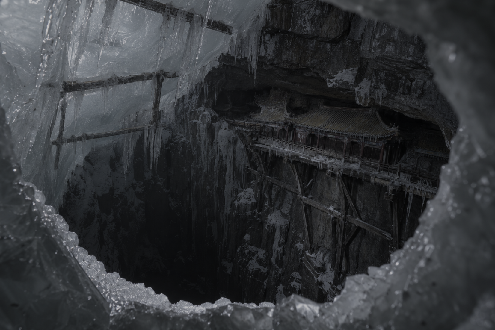
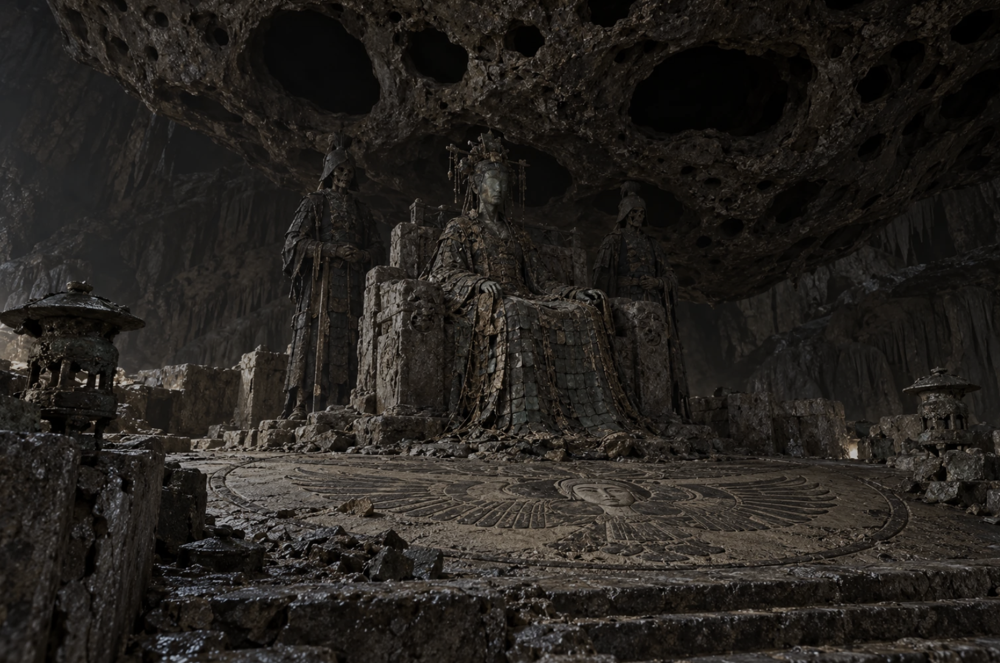
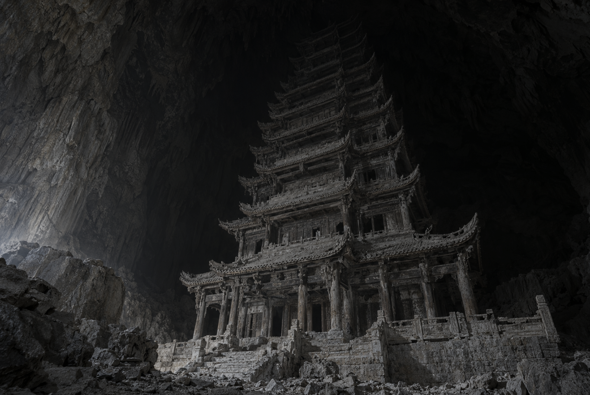

The Lost Tomb Archive
It all began in 1952, in a village outside Changsha. A group of tomb robbers dug up a silk book from a Warring States tomb, and only one of them climbed back out, his hands stained black and his lamp still burning. Fifty years later, his grandson Wu Xie found a copy of that book in the family shop. The map inside led him, Zhang Qiling and Fatty Wang into tombs that should never have been opened.
Behind each of the six doors below is one of those tombs, rebuilt down to the last trap. Push one open, and you will follow their footsteps through sunken palaces, frozen gates and ghost cities that only appear in the rain, chasing a secret that has been buried for 2000 years.



Choose Your Case

Case 01 · 60 MIN
Seven Star Lu Palace
Your grandfather left behind a silk book nobody can read. The seven coffins in the main chamber are waiting for you to open the wrong one.
More details
Under a Warring States tomb lies an older one. Seven stone coffins wait in the main chamber, and no one agrees which of them is real. Further down, a giant cypress grows inside a cave with a bronze coffin locked in its trunk. If you hear a bell ringing in the dark, do not answer it.
Danger level: 2 of 5
Players: 3 to 5
Note: No NPC inside. A good first room.

Case 02 · 75 MIN
Undersea Tomb of Xisha
In 1984 a survey team went under the reef and sent back forty pages of notes. Page forty-one is blank, and so were they.
More details
The tomb was built by Wang Zanghai, the greatest trap designer of his time. Rooms seem to swap places while you walk, and a pool in the center hides eight turning doors. Somewhere inside sits a small model of a palace in the snow. Nobody knows why it is there.
Danger level: 3 of 5
Players: 3 to 5
Note: No NPC, but heavy fog and running water throughout.

Case 03 · 75 MIN
Qinling Divine Tree
Your guide swears he has walked this valley before. Halfway up you find his footprints, already coming back down.
More details
Wu Xie went in with Lao Yang and came out with more questions than answers. The bronze tree is said to turn what you believe into something real, and six-sided bells hang from its branches. In this room, any clue might be planted by your own mind.
Danger level: 4 of 5
Players: 2 to 4
Note: One NPC starts following your team halfway in. Ages 16 and up.

Case 04 · 90 MIN
Heavenly Palace of Yunding
A king who never existed built a palace under the ice. Something is still knocking from behind the bronze gate.
More details
A full expedition crosses the snowfield to find the tomb of the Dongxia king. The route runs through a hall inside an ice dome, a frozen moat, a coffin well and a deep rift. Your team splits up to solve different halls, then meets again at the Bronze Gate. What lies behind it is not in this file.
Danger level: 4 of 5
Players: 5 to 8
Note: Two NPCs patrol the ice halls. Built for large groups.

Case 05 · 90 MIN
Snake Marsh Ghost City
The ghost city only appears when it rains, and tonight it is raining. If a voice out in the marsh calls your name, do not answer it.
More details
Wu Xie joins A Ning's team to trace a missing archaeology group. The marsh is home to snakes that copy human voices, so if someone calls your name, look before you answer. The trail ends at a sunken city, a deep well and a giant stone full of holes.
Danger level: 5 of 5
Players: 4 to 6
Note: Two NPCs hunt by sound. Stay quiet, or they find you first.

Case 06 · 90 MIN
Zhang Family Ancient Building
The way into the mountain starts at the bottom of a lake. Everyone who reached the top floor came back with a different name.
More details
In the village of Bana, your team retraces the steps of a 1976 archaeology team: an old village under the water, tunnels through the rock, and at last the Zhang family building. Every floor was built to keep outsiders out. This file holds the truth about who Zhang Qiling really is.
Danger level: 5 of 5
Players: 4 to 6
Note: NPC chase on every floor above the third.